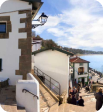

<ion-content>

  <div id="map"></div>
  <div class="button-back" (click)="backPage()"></div>
    <div id="dialogo" class="dialogo">
      <div class="container left">
        
      </div>
      <div class="container right">
        <h1>Historia pesquera del Puerto Viejo
        </h1>
        <button class="button">
          Adelante
        </button>
      </div>
    </div>
  
</ion-content>